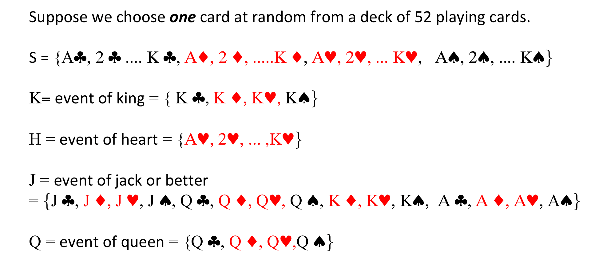

Chapter 3 Probability Axioms
3.1 An Axiomatic Definition of Probability
Definition 3.1 (Probability) We define probability a set function with values in \([0,1]\), which satisfies the following axioms:
- \(P(A) \geq 0\), for every event \(A\)
- \(P(S)=1\)
- If \(A_1,A_2,...\) is
- a sequence of mutually exclusive events, i.e.
\[A_{i}\cap A_{j}=\varnothing, \ \text{for} \ i\neq j,\ \text{and} \ i,j=1,2,...,\] - such that \(A = \bigcup_{i=1}^{\infty} A_i\), then:
- a sequence of mutually exclusive events, i.e.
\[P(A)=P\left(\bigcup_{i=1}^{\infty}A_{i}\right)=\sum_{i=1}^{\infty}P(A_i).\]
3.2 Properties of \(P(\cdot)\)
One can make use of the three axioms to build more sophisticated statements. For instance,
Proof. Take \(A_1=A_2=A_3=....=\varnothing\). Then by () in Axiom (ii) we have
\[P(\varnothing)= P\left( \bigcup_{i=1}^{\infty} A_i \right) = \sum_{i=1}^{\infty} P(A_i) =\sum_{i=1}^{\infty} P(\varnothing)\] which is true only if it is an infinite sum of zeros. Thus
\[P(\varnothing) = 0.\]Proof. Let \(A_{n+1}=A_{n+2}=....=\varnothing\), then \(\bigcup_{i=1}^{n} A_i = \bigcup_{i=1}^{\infty} A_i,\) and, from () (see Axiom (iii)) it follows that:
\[\begin{eqnarray} P\left( \bigcup_{i=1}^{n} A_i \right) &=& P\left( \bigcup_{i=1}^{\infty} A_i \right) = \sum_{i=1}^{\infty} P(A_i) = \sum_{i=1}^{n} P(A_i) + \underbrace{\sum_{i=n+1}^{\infty} P(A_i)}_{\equiv 0}. \end{eqnarray}\]Insert diagram here
Theorem 3.4 For any two events \(A\) and \(B\), such that \(B \subset A\), we have
\[P(A) \geq P(B).\]To illustrate this property, consider for instance \(n=2\). Then we have: \[ P(A_1 \cup A_2 ) = P(A_1) + P(A_2) - P(A_1 \cap A_2) \leq P(A_1) + P(A_2) \] since \(P(A_1 \cap A_2) \geq 0\) by definition.
Proof. Consider that \(A\cup B = A \cup (A^c \cap B)\), and \(A\cap(A^c \cap B) = \phi\). Now remember that \(A^c \cap B = B -(A \cap B)\), so, \[\begin{eqnarray} P(A\cup B) &=& P(A) + P(A^c \cap B) \\ &=& P(A) + P(B) - P(A\cap B). \end{eqnarray}\]
3.3 Illustrations of use
3.3.1 Flipping coins

(#exm:rleI ) (Real-life example I)
adapt example here
3.3.2 Detecting shoppers
(#exm:rleII ) (Real-life example II)


[][width=0.95,height=0.7](Example2_3.png)
[][width=0.9,height=0.5](Example2_4.png)
adapt example here
3.3.3 De Morgan’s Law
Example 3.1 (De Morgan’s law) Given \(P(A\cup B)=0.7\) and \(P(A\cup {B}^c) = 0.9\), find \(P(A)\).
By De Morgan’s law,
\[P(A^c \cap B^c) = P((A\cup B )^c) = 1 - P(A\cup B) = 1 - 0.7 = 0.3\]
and similarly:
\[P(A^c \cap B) = 1 - P(A \cup B^c) = 1- 0.9 = 0.1.\]
Thus, \[P(A^c)=P(A^c \cap B^c )+P(A^c \cap B)= 0.3+ 0.1= 0.4,\]
so \[P(A)=1 - 0.4= 0.6.\]3.3.4 Probability, union, and complement
Example 3.2
John is taking two books along on his holiday vacation. With probability 0.5, he will like the first book; with probability 0.4, he will like the second book; and with probability 0.3, he will like both books. What is the probability that he likes neither book? \
Let \(A_i\) be the event that John likes book \(i\), for \(i=1,2\). Then the probability that he likes at least one book is (remember the short hand notation \(A_1 \cap A_2 = A_1 A_2\)) \[\begin{eqnarray} P(\bigcup_{i=1}^2 A_i) &=& P(A_1 \cup A_2) = P(A_1) + P(A_2) - P(A_1A_2) \\ &=& 0.5 + 0.4 -0.3 =0.6. \end{eqnarray}\] Because the event the John likes neither books is the complement of the event that he likes at leas one of them (namely \(A_1 \cup A_2\)), we have \[ P(A^{c}_1 \cap A^{c}_2 ) = P((A_1 \cup A_2)^c) = 1- P (A_1 \cup A_2) = 0.4. \]
As a measure of uncertainty, the probability depends on the information available. \
Example 3.5 Suppose you have two dice and throw them; the possible outcomes are:
[][width=0.9,height=0.35](c1.png)
Example 3.6 # [cont’d] Let us define \(A\) = getting \(5\), or equivalently \(A=\{ 5\}\). What is \(P(A)\), namely, the probability of getting \(5\)?
[][width=0.9,height=0.35](c2.png)
The dice are fair so we can get 36 events with equal probability ${1}\big \slash{36}$. Namely:
$$
Pr(i,j) = \frac{1}{36}, \quad \text{for} \quad i,j=1,..,6
$$
Thus, we can make use of the blue guys as
\begin{eqnarray}
P(5) &=& Pr\left\{ (1,4) \cup (2,3) \cup (3,2) \cup (4,1) \right\} \\
&=& Pr\left\{ (1,4) \right\} + Pr\left\{ (2,3) \right\} + Pr\left\{(3,2) \right\} + Pr\left\{ (4,1) \right\} \\
&=& {1}\big \slash{36} + {1}\big \slash{36} + {1}\big \slash{36} + {1}\big \slash{36} \\
&=& {4}\big \slash{36} \\
&=& 1 \big \slash{9}.
\end{eqnarray}Now, suppose that we throw the die first and e we get 2.\\
\vspace{0.2cm}
\color{black}\textbf{Q.} \color{black} What is the probability of getting 5 given that we have observed 2 in the first throw?
![][width=1\textwidth,height=0.3\textheight](c4.png)
\color{blue}\textbf{A.} \color{black}
$\text{Pr}\{\text{getting 5 given 2 in the first throw}\}= \text{Pr}\{\text{getting 3 in the second throw}\}=1/6$
3.4 Conditional probability
3.4.1 A check

Example 3.7 Let us define the set \(B\) as:
So we have
\[\begin{eqnarray} P(B) &=& Pr\left\{ (2,1) \cup (2,2) \cup (2,3) \cup (2,4) \cup (2,5) \cup (2,6) \right\} \\ &=& Pr(2,1) + Pr(2,2) + Pr(2,3) + Pr(2,4) + Pr(2,5) + Pr(2,6) \\ &=& 6/36 =1/6 \end{eqnarray}\]
and consider \(A \cap B\)
[][width=0.9,height=0.4](c4.png)
So we have \(P(A \cap B) = Pr (2,3) = 1/36\) so, \[ P(A\vert B) = \frac{P(A \cap B)}{P(B)} = \frac{1/36}{1/6} = \frac{1}{6}. \]3.5 Independence
Clearly, if \(P(A\vert B) \neq P(A)\), then \(A\) and \(B\) are .
3.5.1 Independence – another characterization
Two events \(A\) and \(B\) are independent if \[P(A \vert B) = {P(A)},\] now by definition of conditional probability we know that \[P(A \vert B) = \frac{P(A \cap B)}{P(B)},\] so we have \[P(A) = \frac{P(A \cap B)}{P(B)},\] and rearranging the terms, we find that two events are independent iif \[P(A\cap B) = P(A) P(B).\]
Example 3.8
[][width=0.9,height=0.7](example7.png)
![][width=0.9\textwidth,height=0.6\textheight](example8.png)
3.6 Theorem I
. The theorem remains valid even if \(n=\infty\) in Eq. (). (Double check, and re-do the proof using \(n=\infty\).)
Corollary 3.1 %For a given probability space \((S,\mathcal{B},P)\), let \(B\in \cal{B}\) satisfy \(0<P(B)<1\); then for every \(A\in \cal{B}\): Let \(B\) satisfy \(0<P(B)<1\); then for every event \(A\):
\[\begin{equation*} P(A)=P(A\vert B)P(B)+P(A\vert B^c) P(B^c) \end{equation*}\]
3.7 Theorem II
Theorem I can be applied to derive the well-celebrated Bayes’ Theorem.
Example 3.9 Let us consider a special case, where we have only two events \(A\) and \(B\).
[][width=0.9,height=0.55](example10.png)
… so thanks to Bayes’ Theorem we can reverse the role of \(A\vert B\) and \(B \vert A\).
3.7.1 Guessing in a multiple choice exam
Example 3.10
[][width=0.7,height=0.65](Ross_Ex.png)
3.7.2 Rent car maintenance